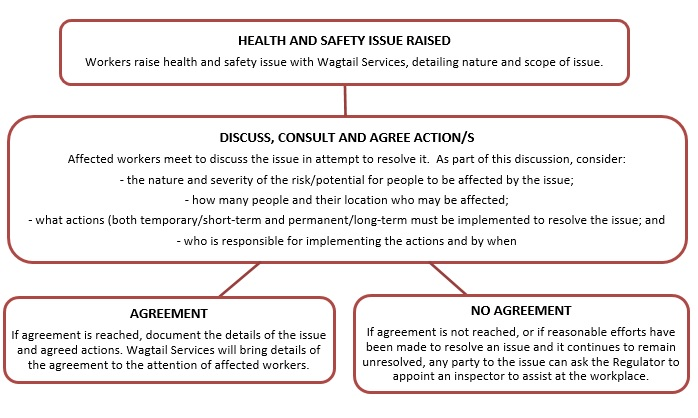

Purpose and Scope
The purpose of this policy and procedure is to set out how Wagtail Services:
- provides a safe workplace and minimises risks to the health and wellbeing of staff, Participants, their families and carers, as well as all other stakeholders; and
- promotes health and safety practices that are consistent with legislative requirements.
It applies to all stakeholders of the organisation, including Participants, families and carers, advocates, staff, volunteers, contractors, other service providers, government agencies and members of the community. It meets relevant legislation, regulations and standards as set out in Schedule 1, Legislative References.
WHS programs should align with AS/NZS 4801:2001 Occupational Health and Safety Management Systems - Specification with Guidance for Use and 4804:2001 Occupational Health and Safety Management Systems - General Guidelines on Principles, Systems and Supporting Techniques.
Applicable NDIS Practice Standards
Risk Management
Outcome: Risks to Participants, workers and the provider are identified and managed.
Indicators:
- Risks to the organisation, including risks to Participants, financial and work health and safety risks, and risks associated with provision of supports are identified, analysed, prioritised and treated.
- A documented system that effectively manages identified risks is in place and is relevant and proportionate to the size and scale of the provider and the scope and complexity of supports provided.
-
Support delivery is linked to a risk management system, which
includes:
- Incident Management;
- Complaints Management;
- Work Health and Safety;
- Human Resource Management;
- Financial Management;
- Information Management; and
- Governance.
Safe Environment
Outcome: Each Participant accesses supports in a safe environment that is appropriate to their needs.
Indicators:
- Where supports are provided in the Participant’s home, work is undertaken with the Participant to ensure a safe support delivery environment.
Definitions
- Duty of Care: A common law concept that refers to the responsibilities of organisations to provide people with an adequate level of protection against harm and all reasonable, foreseeable risks of injury. In the context of this policy, duty of care refers to the responsibility of Wagtail Services to provide staff with an adequate level of care and protection against reasonable, foreseeable harm and injury. Similarly, Wagtail Services staff are expected to provide Participants and anyone else using the service with the same level of care and protection to prevent reasonable, foreseeable harm and injury.
-
Electrical Equipment: any apparatus, appliance,
cable, conductor, fitting, insulator, material, meter or wire
that:
- is used for controlling, generating, supplying, transforming or transmitting electricity at a voltage greater than extra-low voltage;
- is operated by electricity at a voltage greater than extra-low voltage;
- is part of an electrical installation located in an area in which the atmosphere presents a risk to health and safety from fire or explosion; or
- is, or is part of, an active impressed current cathodic protection system.
- Hazard: the chance of something happening that may have a negative (or positive) effect on the intended outcome. In relation to health and safety, this is generally a source or situation that could cause harm or damage to a person, property or the environment.
- Person Conducting a Business or Undertaking (PCBU): a broad term used in work health and safety legislation to describe all forms of modern working arrangements, commonly referred to as businesses. This includes an individual who is conducting a business in their own right (e.g. Sole Trader/Self-employed).
- Personal Protective Equipment (PPE): clothing or equipment worn by workers to protect them from possible harm or injury. PPE can include items such as eye and face protection (e.g. glasses, goggles or face shields), gloves, masks, clothing (e.g. coveralls, aprons), and safety footwear.
-
Reasonably Practicable: what could be reasonably
able to be done at a particular time to ensure health and safety,
with regard for:
- the likelihood of the hazard or risk occurring;
- the degree of potential harm;
- how much information is known, or ought to have been known, about the hazard or risk;
- the ways of eliminating or minimizing the risk;
- the availability/suitability of eliminating or minimising the risk; and
- the cost of eliminating or minimising the risk (is the cost grossly disproportionate to the potential risk)
- Safe Work Procedure (SWP): a documented procedure for performing specific workplace tasks. SWPs reduce risks to health and safety by ensuring staff know how to work safely when carrying out specific tasks by providing step-by-step instructions on how to perform a task/job, and the necessary safety precautions. SWPs may also be called Standard Operating Procedures (SOPs).
- Worker: includes employees, contractors, subcontractors, apprentices and trainees, work experience students, volunteers and any other individuals if they perform work for the business.
- Workplace: any place where work is carried out on behalf of Wagtail Services. This can include a Participant’s private residence, or public areas in the local community.
Policy
Wagtail Services is committed to delivering services that do not cause harm, injury or illness to anyone at any time. Wagtail Services takes all reasonable steps to ensure the health, safety and wellbeing of its staff, Participants, as well as their families, carers, the community, and any other stakeholders. It also endeavours to provide a safe and healthy work and service delivery environment, in compliance with its legal and moral obligations.
Wagtail Services staff are not expected to carry out work that is unsafe. Participants and others are not expected to tolerate unsafe work practices or environments. Wagtail Services considers that communication and consultation with its staff, Participants and any other stakeholders, is important in identifying, understanding and resolving any potential hazards.
While the main responsibility for managing Work Health and Safety (WHS) is with Wagtail Services and its Leadership Team, all Wagtail Services staff, Participants, their families and carers play an important role in keeping the services and work environments of Wagtail Services safe.
- implementing an effective WHS program for Wagtail Services, taking into account the size and nature of the services it provides;
- showing leadership and commitment to having a positive safety culture;
- providing enough resources to enable health and safety to be effectively managed;
- consulting and involving staff and other stakeholders about health, safety and well-being matters that may affect them;
- developing and documenting WHS policies and procedures, including Safe Work Procedures and Emergency Procedures;
- providing health and safety training and information for all staff to safely perform their role;
- reporting and investigating accidents and incidents;
- managing risks by eliminating or reducing them as far as is reasonably practicable;
- providing appropriate safety equipment and personal protective equipment (PPE); and
- regularly monitoring and reviewing Wagtail Services’ health and safety performance to identify improvements
Wagtail Services staff are responsible for:
- taking responsibility for their own health and safety, and not compromising the safety of others;
- following all reasonable instructions, safe work procedures and rules;
- reporting any health and safety hazards or concerns;
- reporting all injuries, incidents or near misses as soon as possible;
- participating in health and safety training as required by Wagtail Services; and
- promoting a positive health and safety culture to help continuously improve.
If a staff member does experience an injury or illness, Wagtail Services is committed to the safe and durable return of the injured worker and will:
- participate in the development of a return to work/suitable duties plan and ensure that injury management commences as soon as possible after the staff member is injured;
- support the injured staff member and ensure that early return to work is a normal expectation;
- provide meaningful suitable duties that are based on medical advice as soon as possible;
- ensure that injured staff (and anyone representing them) are aware of their rights and responsibilities – including the right to choose their own doctor, and the responsibility to provide accurate information about the injury and its cause;
- consult with staff to ensure that the return to work program operates as smoothly as possible; and
- maintain the confidentiality of injured staff members and their records.
Wagtail Services’ Participants, their families and carers (with the support of staff where needed), are responsible for ensuring that their actions, or failure to act, does not intentionally put themselves, staff or others at risk (without compromising the Participant’s rights).
Where a Participant experiences an injury or illness in connection with the supports provided by Wagtail Services, Wagtail Services has in place a Participant Incident Management Policy and Procedure and will protect and uphold Participant rights in accordance with this policy.
Wagtail Services has a goal to provide a safe and healthy work environment that is free from workplace injury and illness. This can only be achieved through the honest participation, co-operation and commitment of everyone working together.
Procedures
General
All WHS issues must be reported to the Manager, who will address or respond to the issue, or nominate a suitable staff member to do so. Staff can report safety concerns to the Manager via email or other electronic method, or by completing an Incident Report Form. Participants can raise potential safety concerns with their support worker (who can then escalate if necessary), via email, or by submitting a Feedback, Compliments and Complaints Form.
The Manager must track the progress and outcomes of all WHS issues raised in Wagtail Services’ Risk Register. Where relevant, issues should also be included in the Continuous Improvement Register.
The Manager reports WHS matters to the Leadership Team monthly. All high-risk concerns (for instance, where there is immediate risk of death or serious injury) must be escalated to the Leadership Team immediately so that control measures can be implemented.
Wagtail Services identifies and manages workplace hazards and risks to health and safety in line with its Risk Management Policy and Procedure. For incident reporting and investigation procedures, see Wagtail Services’ Workplace Incident Reporting and Participant Incident Reporting policies and procedures. Emergency Procedures are set out in Wagtail Services’ Emergency Planning Policy and Procedure.
Leadership Team Responsibilities
The Leadership Team must:
- make this policy available to all Staff and draw their attention to it in an effective manner;
- keep up to date and comply with changes in WHS legislation and practices and ensure these are communicated to staff, Participants and others where relevant;
- assign designated staff who are responsible for WHS functions and activities;
- ensure staff are provided with adequate training in Safe Work Procedures and are informed of known hazards to their health and wellbeing that are associated with the work they perform;
- support access and provide information to inspectors, authorised representatives or staff who are acting within their powers under WHS legislation; and
- allocate appropriate resources to control any identified risk.
Manager’s Responsibilities
The Manager is responsible for overseeing Wagtail Services’ WHS functions and activities. They must ensure that:
- there are safe systems of work in place;
- all equipment provided for use by workers is safe and meets relevant safety standards;
- substances and equipment are used, handled, and stored safely;
- there are adequate welfare facilities available for workers, such as first aid kits;
- Wagtail Services holds all appropriate licenses, registrations and permits, where required under WHS legislation;
- every reasonable effort is made to resolve WHS issues with workers or their representatives within a reasonable timeframe; and
- safety audits and risk assessments of Wagtail Services’ workplaces are undertaken regularly to prevent injuries and incidents
Staff Responsibilities
WHS responsibilities and accountabilities will be included in all Position Descriptions. Staff are expected to uphold these at all times when performing duties for or when representing Wagtail Services.
Upon commencement, all staff must undergo initial training and orientation that includes general and task-specific WHS training. Staff are expected to participate in ongoing formal and on-the-job training provided by Wagtail Services as required.
Staff must provide appropriate health and safety information, instruction, training and supervision to all Participants, families, carers and other people in the workplace and ensure those people are not exposed to health and safety risks arising from Wagtail Services’ activities.
Staff must also take responsibility for their own safety and the safety of others who could be affected by their actions. They must cooperate with all reasonable WHS rules and practices implemented by Wagtail Services and contribute to reviews of this policy and procedure.
Responsibilities of Participants, Families, Carers and Others
Participants, families, carers and other people in Wagtail Services’ workplaces are expected (with the support of staff where required) to:
- be familiar with this policy and procedure;
- cooperate with all reasonable WHS rules and practices implemented by Wagtail Services, including providing all relevant personal information and allowing relevant risk assessments to be undertaken; and
- ensure their actions or failure to act do not put themselves, staff or others at risk.
Issue Resolution
Wagtail Services will take all reasonable steps to consult and collaborate with workers to resolve potential or reported health and safety risks that may affect them. Wagtail Services also acknowledges that sometimes health and safety matters that are raised cannot be immediately resolved or actions agreed to mitigate the risk.
Where a health and safety matter has been reported to Wagtail Services and it remains unresolved, the following Issue Resolution process can be followed.

Reporting
WHS hazards or risks should be identified, managed and reported in accordance with Wagtail Services’ Risk Management Policy and Procedure.
Incidents or injuries relating to WHS issues should be reported in accordance with Wagtail Services’ Incident Management policies and procedures.
Risk Assessments
The following approach should be taken when conducting a risk assessment in relation to a possible workplace health and safety hazard:
- conduct the risk assessment objectively - gather all available, relevant information, data and research about the hazard;
- include staff and/or Participants who work with, or may be directly impacted by the hazard, in the risk assessment process – risk assessments should be a team effort;
- consider all possible control options, based on the Hierarchy of Control, as outlined in Wagtail Services’ Risk Management Policy and Procedure.
- document the risk assessment, including who was involved in the risk assessment, the nature of the hazard(s), the current controls and any proposed treatments in the Risk Assessment Form
- assign any proposed/future treatments to a responsible Manager and agree on a date that the action can be reasonably completed;
- regularly review the progress of treatment actions to ensure they are completed, or if they cannot be completed to determine an alternate strategy to reduce the risk; and
- provide the Risk Assessment to the Manager so that it can be entered and tracked in Wagtail Services’ Risk Register.
For additional guidance in conducting risk assessments and some practical advice for managing risks for staff working in Participant’s homes, the Guidance Material “A guide to working safely in people’s homes” (2018) from Workplace Health and Safety Queensland may be helpful (noting it can be applied across all States and Territories): https://www.worksafe.qld.gov.au/injury-prevention-safety/workplace-hazards/dangers-in-your-workplace/health-care-and-social-assistance/community-services.
Working in Participant’s Homes
Where supports are to be provided in a Participant’s home, the Participant Risk Assessment and Home Risk Assessment must be completed, monitored and reviewed (see Wagtail Services’ Risk Management Policy and Procedure).
A Participant’s home can change between visits. Changes may include:
- positioning of furniture;
- inoperable electrical equipment;
- people or animals are now present;
- altered storage patterns;
- spills or leaks;
- new equipment or furniture; and
- obstructed access.
Staff must determine at each visit the safety of the Participant’s home as a workplace before commencing their duties. This includes undertaking a visual scan of the home immediately on arrival, and of any equipment to be used, before use.
Participants and/or their supporters are responsible for:
- maintaining a safe work environment for staff (for example, repair broken steps, mow long grass, restrain animals, provide adequate lighting);
- looking after their own in-home safety (for example, maintaining electrical equipment and installing smoke alarms and safety switches to switchboards);
- cooperating with staff to ensure they can work in a safe way (for example, moving furniture to allow adequate work space);
- keeping their equipment safe, well maintained and in good order; and
- informing staff of any known hazards.
Working in a shared living environment
All staff working in Supported Independent Living services will receive instruction in how to manage the risks associated with delivering services in a shared living environment.
The Leadership Team will conduct risk assessments and management plans for Supported Independent Living services, and amend policies and procedures where required.
The Leadership Team will review risks and incidents on a monthly basis, and refer any issues identified for inclusion in the Continuous Improvement Register.
Remote or Isolated Work
Remote or isolated work is when a staff member may be isolated from help from other people because of where or when they are working, or the nature of the work they are doing. For example, they may be working in locations or at times where it would be difficult for them to be rescued, get medical assistance or be reached by emergency services.
Workers also face additional risks if nobody else is around to help with difficult tasks, alert them to hazards, give a second opinion about how to safely do a task, or notice if they are fatigued.
A worker may be isolated even if other people are close by, for example a community nurse carrying out clinical visits at night.
Wagtail Services must manage the risks associated with remote or isolated work. This is particularly important should a staff member require medical assistance, rescue or emergency services. Exposure to violence and poor access to emergency assistance are the main hazards that increase the risk of remote or isolated work.
Manual Handling
Manual Handling is related to the physical aspects of work, and injuries can occur from:
- using repetitive or ongoing force;
- using or having sudden force;
- repetitive movements;
- prolonged holding in one position, or awkward postures; and/or
- exposure to vibration.
Manual Handling injuries can also be a result of moving objects or handling people, either over an extended period of time (gradual wear and tear), or due to a sudden incident. Wagtail Services will identify potential manual handling risks in consultation with staff and Participants and implement management plans to reduce the risk of injuries.
Participant Home Risk Assessments will also help to identify potential manual handling risks and strategies to prevent them specific to each Participant. The Manager will ensure that staff working with each Participant are informed of any potential manual handling issues.
Wagtail Services will provide Manual Handling training to staff whose role includes manual handling of Participants, initially and then annual refresher training. This will include strategies for safely handling people for support staff who are required to help with Participant mobility.
Workplace Violence
Wagtail Services proactively works to prevent and reduce violence in the workplace, including when working in a Participant’s home or in the community. The Leadership Team will conduct risk assessments in relation to situations that may expose workers to the risk of violence, including:
- providing services to Participants who have challenging behaviours that may be related to a medical condition or intellectual impairment, as long as it is within the scope of Wagtail Services;
- performing work alone and/or in isolated environments; and
- working in an environment where other people may pose a risk to workers’ personal security (e.g. Participant’s family and friends).
In conjunction with Wagtail Services’ Participant Risk Assessment and Home Risk Assessment, where a Participant has been identified as having challenging behaviour, specific strategies and mitigations to reduce the risk of violence will be clearly outlined in their Support Plan. Wagtail Services will ensure that staff are provided with de-escalation and avoidance strategies.
All injuries or incidents relating to violence must be reported – including abuse and threats, in accordance with Wagtail Services’ Workplace Incident Management Policy and Procedure.
Work Related Stress
Work related stress can be commonly experienced when working with vulnerable people or people with high or complex needs. Work related stress refers to the physical, mental and emotional reactions of workers when they perceive that their work demands are greater than their abilities and/or their resources (such as time/ help / support). Stress responses can occur when the worker perceives they are not coping in situations where it is important to them that they do.
The Leadership Team will conduct risk assessments to identify potential sources of occupational stress. These might include (but are not limited to):
- rates of absenteeism;
- staff engagement/morale;
- peak/seasonal demands;
- incident reports and data trends;
- exit interviews of past staff; and
- client feedback.
Risk assessments must also consider risk factors. These might include (but are not limited to):
- excessive workload from supervisors/managers;
- clients or others in the workplace;
- lack of clarity about their role;
- exposure to emotionally distressing situations or incidents that may threaten their wellbeing;
- emotional attachment to a terminally ill client; and
- poor support from managers.
Wagtail Services will implement control measures to prevent work related stress in consultation with its workers.
Biological Hazards
Exposure to biological hazards can cause serious illness to workers, with potential for infections and other health complications. To reduce exposure and risk from contact with biological hazards, Wagtail Services has in place specific infection prevention and control strategies, refer to Wagtail Services’ Infection Control Policy and Procedure.
Safe Work Procedures
Wagtail Services will develop Safe Work Procedures (SWPs) in consultation with workers and based on risk assessment. SWPs will be reviewed regularly to ensure the documented processes are current, accurate and meet legislative requirements. Staff will be provided training in Wagtail Services’ SWPs at induction and when they are changed/updated.
Personal Protective Equipment
Personal Protective Equipment (PPE) provides protection to workers from possible harm or illness hazards they may be in contact with. The use of PPE does not change the nature of the risk and is considered a ‘last line of defence’. Wagtail Services will provide the necessary PPE required to safely perform job tasks, based on risk assessment and in consultation with workers.
Staff must use appropriate PPE when necessary that is suitable for the nature and degree of the identified hazard. For tasks involving hazardous chemicals, the PPE recommended in the Safety Data Sheet (SDS) must be used.
Staff must be trained in the proper selection, fitting, storage and maintenance of PPE. Training will be provided by Wagtail Services at induction.
Electrical Safety
Electrical work is not to be undertaken on Wagtail Services premises except by an appropriately licensed Electrical Installation worker engaged by the Manager. This work must be completed by a licenced electrician or an appropriately trained staff member or contractor.
Testing, Tagging and Repairing Electrical Equipment
The inspection, testing and tagging of electrical equipment used at Wagtail Services premises must be conducted for all equipment that is in use. Equipment not in use and/or beyond its testing date should be removed from service, and an isolation tag applied noting that tagging is required and must be completed prior to use.
Testing and tagging of equipment must be done either by a qualified electrician or by someone who has successfully completed an approved course at a Vocational Education and Training provider. There are also a number of electrical contractors who specialise in the checking and tagging of electrical equipment. Electrical appliances must be inspected and tested:
- at intervals not exceeding those set out by AS3760:2010 (a tolerance of two weeks is acceptable); and
- before being returned to service or after any repair or servicing that could have affected the electrical safety of the appliance.
Manufacturer's instructions may specify intervals appropriate to specific types of equipment.
New Equipment
Brand new electrical equipment that is ‘out of the box' and unused (i.e. new equipment that is not second-hand) does not have to be tested before first use, but should still be visually inspected to ensure that no damage occurred during transport, delivery, installation or commissioning.
The date when the new electrical item was placed into service should be recorded, including:
- that the equipment is ‘new to service';
- the date of entry into service; and
- the date when the first electrical safety test is due.
Any equipment purchased second-hand must be tested and tagged before first use.
Appliances Brought in from Home
Electrical appliances brought in from home by staff, or by contractors, Participants or volunteers, for use on Wagtail Services premises are subject to the same testing and tagging procedures as for appliances owned or leased by Wagtail Services. Appliances should be tested and tagged prior to their use on Wagtail Services property.
While there is no requirement to test and tag personal computers/laptops, staff, Participants and volunteers are encouraged to have their laptops tested and tagged using an approved person or company.
In both situations above the testing and tagging is the responsibility and at the expense of the owner.
Hire Equipment
While it is the responsibility of the person hiring equipment to ensure that the equipment is inspected and tested at the commencement of each hire, the person or company who hires out the equipment to Wagtail Services must ensure that the equipment - for the period of the hire - meets all relevant inspection and testing requirements.
Electrical Equipment and Appliances in Participant’s Homes, including SIL
While electrical equipment in a private residence does not have to be tested and tagged, Wagtail Services staff must still visually inspect any electrical equipment or appliance prior to use to ensure that it is not damaged, cords are not frayed and the item is in good working order.
Any electrical item that is broken or damaged must not be used, and the Participant or their supporters/family informed so it can be repaired or replaced. If appropriate, it is recommended that the item is removed from use.
Use of Electrical Portable Outlet Devices on Wagtail Services Premises
The use of double adaptors is not permitted within Wagtail Services premises and should be removed and replaced with Electrical Portable Outlet Devices (EPODs), also known as power boards, fitted with overload protection devices. Ensure that any power boards are installed securely and in a location that is not susceptible to damage or exposure to water and have adequate ventilation. Where possible, power boards should be placed on their side to prevent dust build up in unused points. Each power board must be plugged into a general purpose outlet (GPO). Be aware too many EPODs plugged into GPOs on the same circuit may overload the circuit and cause a power failure.
Staff must regularly check that all plugs are firmly fixed into the power board and look for any signs of damage/fraying. Any power boards that are broken or not working must be removed from use and replaced.
Extension leads are only suitable for temporary applications. For longer term applications a new GPO should be installed or an EPOD with overload protection used. Ensure the extension lead is placed appropriately and shielded with an appropriate extension lead cover to reduce tripping hazards. Be wary of heavy equipment rolling over or impacting the lead as it may damage the insulation and wires causing shorting.
Unsafe Electrical Equipment at the Workplace
The Manager will ensure that any unsafe electrical equipment is disconnected (or isolated) from its electricity supply and, once disconnected, is not reconnected until it is repaired or tested and found to be safe or is replaced or permanently removed from use.
To ensure that unsafe electrical equipment is not used inadvertently before it can be tested, repaired or replaced, it should immediately be tagged to indicate that it has been taken out of service for safety reasons pending testing and possible repair and to warn against further use.
An Incident Report should be lodged when the hazard is discovered and include all details of the incident to enable accurate investigation.
Electrical Hazard and Incident Reporting
All hazards and injuries relating to electrical safety must be reported immediately in accordance with Wagtail Services’ Incident Management Policies and Procedures.
Most electrical shocks constitute a notifiable incident and must be dealt with in accordance with Wagtail Services’ Workplace Incident Management Policy and Procedure.
Supporting Documents
Documents relevant to this policy and procedure include:
- Policies and procedures relating to emergency planning; safety and security; vehicle safety; physical accessibility; chemical use and storage; infection control; medication management and food storage and preparation
- Risk Register
- Workplace Incident Management Policy and Procedure
- Participant Incident Management Policy and Procedure
- Emergency Management Plan
Monitoring and Review
This policy and procedure will be reviewed at least annually by the Leadership Team. Reviews will incorporate staff, Participant and other stakeholder feedback, where relevant.
Wagtail Services’ Continuous Improvement Register will be used to record improvements identified and monitor the progress of their implementation. Where relevant, this information will be considered as part of Wagtail Services’ service planning and delivery processes.
↑ Back to Top